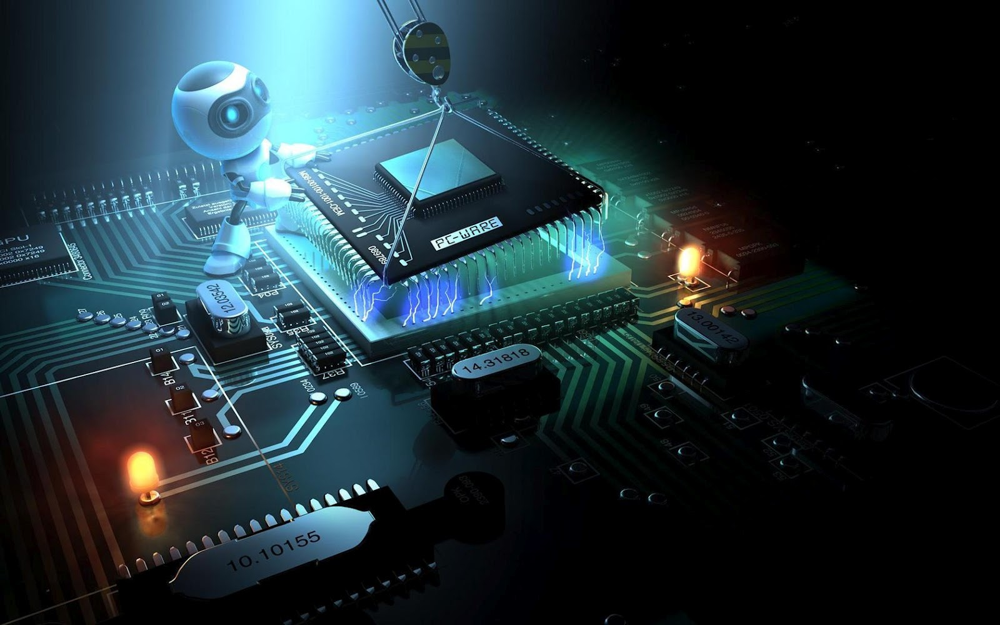

Computer security, also known as cybersecurity or IT security, is the protection of information systems from theft or damage to the hardware, the software, and to the information on them, as well as from disruption or misdirection of the services they provide. It includes controlling physical access to the hardware, as well as protecting against harm that may come via network access, data and code injection, and due to malpractice by operators, whether intentional, accidental, or due to them being tricked into deviating from secure procedures.
The field is of growing importance due to the increasing reliance of computer systems in most societies. Computer systems now include a very wide variety of "smart" devices, including smartphones, televisions and tiny devices as part of the Internet of Things – and networks include not only the Internet and private data networks, but also Bluetooth, Wi-Fi and other wireless networks.

Measures for computer protectin:
Security Measures:
Reducing Vulnerabilities:
Security Architecture:
Hardware Protection Mechanisms: